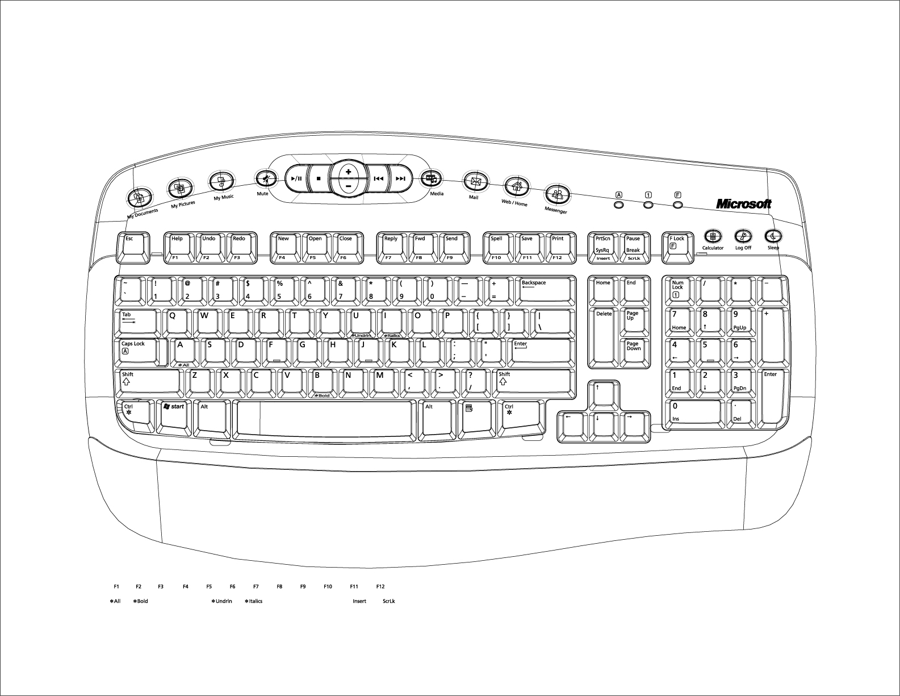
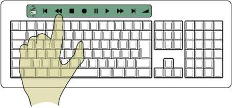

DESTINATION KEYBOARD
The Destination keyboard was a flagship Microsoft Hardware product featuring an integrated media control center, programmable "My Favorites" keys, and enhanced function keys for common tasks like Help, Undo, and Redo.
The challenge was balancing powerful functionality with ease of use—adding features without overwhelming users or cluttering the keyboard layout.

MY FAVORITES KEYS
Designed the "My Favorites" programmable key system—five dedicated keys that users could assign to their most-used applications, websites, or folders. Combined with the "Show Favorites" key for quick access.

KEYBOARD LAYOUT
Created detailed specifications for keyboard layout including key placement, icon design, and function mapping. Every key needed clear purpose and discoverability.

KEY ICONS
Designed icon systems for special function keys that needed to communicate instantly across languages and skill levels. Explored multiple variations to find the clearest visual language.

FUTURE CONCEPTS
Led innovation projects exploring future keyboard interactions—how media controls, application shortcuts, and new input paradigms could evolve over the next 3-5 years.



IMPACT
- Shipped multiple keyboard products as part of Microsoft Hardware lineup
- Designed programmable "My Favorites" key system adopted across product line
- Created icon language for special function keys
- Led innovation projects defining 3-5 year product roadmap
- Combined hardware industrial design with software interaction design
- Generated patent: Destination Shortcuts — #20040239637